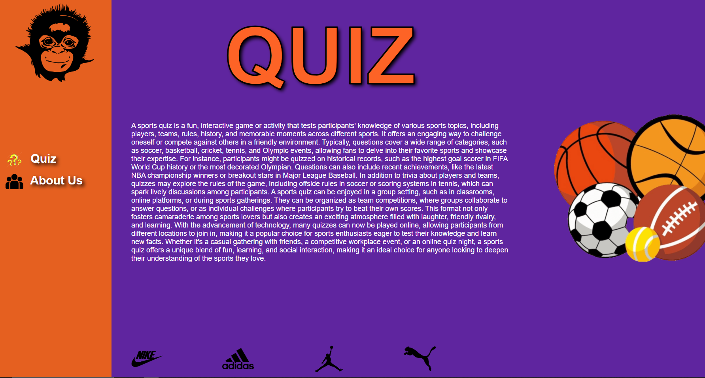
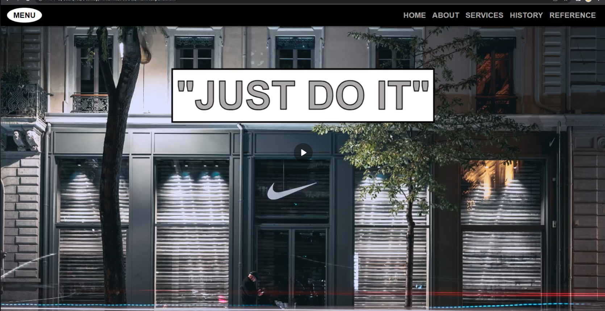

Hi! My name is Carlos Miguel Sanchez, and I’m 22 years old. I was born on January 4, 2002, in Meycauayan, Bulacan. I live at 115 Gen. Luna Street, Malabon City, and I’m currently studying at the City of Malabon University.
I love playing video games, riding motorcycles, eating yogurt, and playing basketball. These hobbies keep me active, relaxed, and always having fun. Proud to be a Filipino, I enjoy living life to the fullest and striving for my dreams!

Project 1: Sport Quiz Game
Carlos & Kim’s Sports Quiz Game is a fun and engaging platform designed for sports fans of all levels. The game features 5 sports-related questions in each round, with the option to choose your preferred difficulty level. Players earn points for correct answers, and a ranking system lets you compete against others to see who knows the most about sports.
The website’s design is inspired by the bold colors of the Phoenix Suns, creating an energetic and vibrant look that matches the excitement of the game. Whether you’re testing your knowledge for fun or aiming to climb the leaderboard, Carlos & Kim’s Sports Quiz Game offers a perfect mix of challenge and entertainment for every sports enthusiast.

Project 2: Shoe Store Website
This sports-themed online store specializes in footwear inspired by Nike, featuring a sleek and modern design that highlights the iconic "Just Do It" branding. The website includes intuitive navigation with sections like Home, About, Services, History, and Reference, providing a comprehensive experience for visitors to explore the store's background, offerings, and inspiration. With a focus on delivering high-quality sports shoes, the site combines motivation, style, and functionality to cater to athletes and enthusiasts alike.
Project 3: Basic Math Calculator Website
The website featured in the image is called "Kim and Carlos Calculator of the Fire Nation" and has a playful, humorous tone that draws inspiration from the "Fire Nation" concept in the popular "Avatar: The Last Airbender" series, describing the creators, Kim and Carlos, as "like Fire Nation prodigies" in the coding world who are "bending code" to build calculators that can "conquer math with the power of a thousand firebenders", promising to provide users with various calculation tools, including basic math, area, and money counting functions, all created using HTML, JavaScript, and CSS while handling "the ups and downs (mostly when the code breaks)" of the coding process, with an overall message conveying a sense of excitement and anticipation as the website declares that the "Fire Nation of calculators is coming!" and encourages the reader to "get ready, world" for the arrival of these powerful calculators..